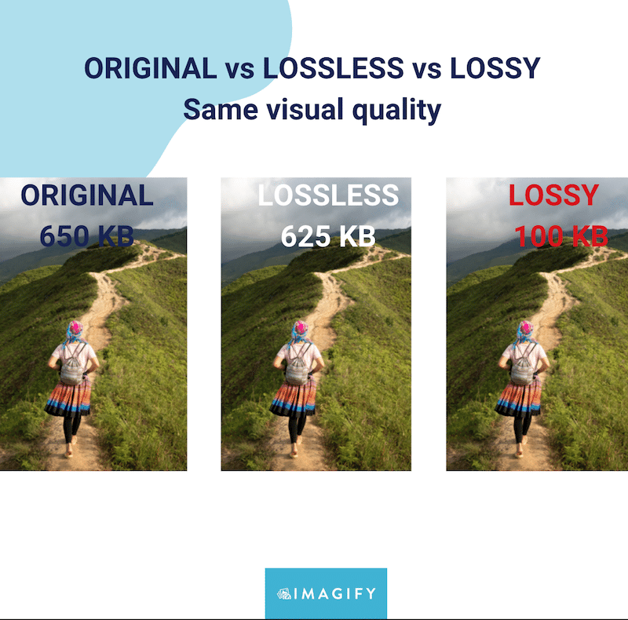
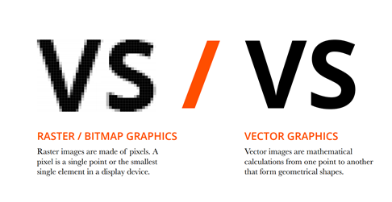

Compressie is het verkleinen van bestanden en meestal gebeurt dit bij geluid en video bestanden, omdat ze veel detail bevatten en dus groot zijn. Dit verkleinen van bestanden is handig, want hierdoor hoeft je harde schijf minder informatie op te slaan en worden de bestanden sneller verzonden en gedownload. Er zijn twee soorten compressie.
Bij lossy compression worden er bijvoorbeeld kleuren die bijna niet veschillen van elkaar verwijderd, waardoor het bestand minder verschillende kleuren hoeft te onthouden. Dit zorgt voor veel kleinere bestanden, terwijl de kwaliteit niet heel erg veel minder is. Wel kan de kwaliteit erg achteruit gaan als er te veel gecomprimeerd is
Bij lossless compression wordt geen data verwijderd, maar wordt het slimmer opgeslagen. Bijvoorbeeld als er naast elkaar pixels zijn met dezelfde waarde, dan worden ze in de plaats van apart opgeslagen samen opgeslagen als een waarde. Lossless compression bestanden zijn kleiner dan het origineel, maar niet kleiner dan lossy compression bestanden.
Ook geluidsfragmenten zoals muziek kunnen soms erg groot zijn. Daarom kan er ook bij geluid gecomprimeerd worden. Lossy compression bij geluid wordt ook gebruikt, doordat sommige tonen niet te horen zijn voor het menselijk oor kunnen sommige tonen verwijderd worden wat weer voor minder grote bestanden zorgt. De bitrate is ook erg belangrijk voor de grote en kwaliteit van het muziekbestand. De bitrate is de samplerate en de hoeveelheid bits met elkaar vermenigvuldigd. Als de bitrate kleiner wordt, maar niet te klein anders klinkt het geluid niet meer goed dan heeft het bestand veel minder opslag nodig. Zo kan je veel meer muziek opslaan op je computer zonder dat het te veel opslag nodig heeft.
Een bitmapafbeelding is een raster van verschillende pixels die allemaal een eigen waarde hebben Dit zorgt er wel dan voor dat het bestand erg groot is en als je erg inzoomt op de afbeelding dan is het niet meer zo scherp.
Een vectorafbeelding gebruikt in de plaats van pixels, eigenschappen waar een afbeelding uit bestaat. Bijvoorbeeld lijnen, kleuren en vormen. Ook gebruikt vector meer wiskundige formules om deze data op te gebruiken. Vectorafbeeldingen blijven erg scherp als je inzoomt.
